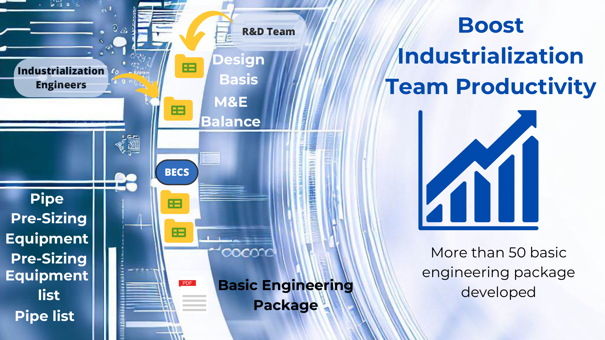

Abengoa
Process Engineer &
Simulation Team Manager
Nov 2012 — May 2017
Developing biofuel plant projects across multiple business units — leading basic engineering, process simulation, and energy integration for next-generation fuel technologies.
Graphic Summary

Experience Highlights
Designed and built an internal tool to standardise the output of each area within a basic engineering project. Once areas followed a model, the tool assembled a complete basic engineering package automatically — eliminating error sources at the integration step. Adopted across three Abengoa business units: Bioenergy New Technologies, Abengoa Research, and Abengoa Energy.
Converting municipal solid waste into low-carbon transportation fuels via an innovative thermochemical process. Responsible for technology evaluation and basic engineering of gasification and Fischer-Tropsch areas. HAZOP staff for Fulcrum Sierra Biofuels Plant.
Biobutanol production by enzymes. Revamp of an existing bioethanol plant. Responsible for utilities basic engineering and cross-area integration.
Bioethanol from farm waste via enzymatic hydrolysis. Responsible for steam generation and distillation areas across multiple projects.
Bioethanol from municipal solid waste. Developed custom basic engineering for publicly tendered processes. Responsible for acid pretreatment, distillation, evaporation, and waste drying areas at different stages. Responsible for energy integration across all areas.